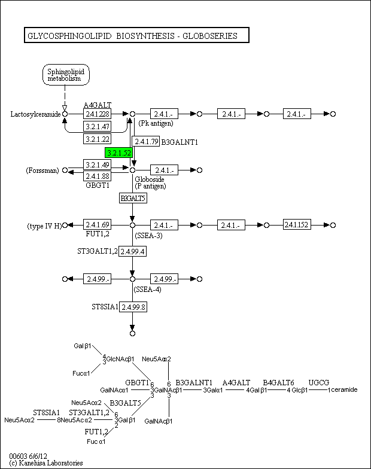

Glycosphingolipid biosynthesis - globo series - Oryza sativa japonica (Japanese rice) (RefSeq)
[
Pathway menu
|
Organism menu
|
Pathway entry
|
Download KGML
|
User data mapping
]
Reference pathway
Reference pathway (KO)
Reference pathway (EC)
Reference pathway (Reaction)
-----< Set personalized menu >-----
-----< Sort below by alphabet >-----
Homo sapiens (human)
Homo sapiens (human) + Disease/drug
Pan troglodytes (chimpanzee)
Pan paniscus (bonobo)
Gorilla gorilla gorilla (western lowland gorilla)
Pongo abelii (Sumatran orangutan)
Macaca mulatta (rhesus monkey)
Mus musculus (mouse)
Rattus norvegicus (rat)
Canis familiaris (dog)
Ailuropoda melanoleuca (giant panda)
Felis catus (domestic cat)
Bos taurus (cow)
Sus scrofa (pig)
Equus caballus (horse)
Monodelphis domestica (opossum)
Sarcophilus harrisii (Tasmanian devil)
Ornithorhynchus anatinus (platypus)
Gallus gallus (chicken)
Meleagris gallopavo (turkey)
Taeniopygia guttata (zebra finch)
Anolis carolinensis (green anole)
Xenopus laevis (African clawed frog)
Xenopus tropicalis (western clawed frog)
Danio rerio (zebrafish)
Takifugu rubripes (torafugu)
Oryzias latipes (Japanese medaka)
Branchiostoma floridae (Florida lancelet)
Ciona intestinalis (sea squirt)
Strongylocentrotus purpuratus (purple sea urchin)
Drosophila melanogaster (fruit fly)
Drosophila pseudoobscura pseudoobscura
Drosophila ananassae
Drosophila erecta
Drosophila persimilis
Drosophila sechellia
Drosophila simulans
Drosophila willistoni
Drosophila yakuba
Drosophila grimshawi
Drosophila mojavensis
Drosophila virilis
Anopheles gambiae (mosquito)
Aedes aegypti (yellow fever mosquito)
Culex quinquefasciatus (southern house mosquito)
Apis mellifera (honey bee)
Nasonia vitripennis (jewel wasp)
Tribolium castaneum (red flour beetle)
Acyrthosiphon pisum (pea aphid)
Pediculus humanus corporis (human body louse)
Ixodes scapularis (black-legged tick)
Caenorhabditis briggsae
Schistosoma mansoni
Nematostella vectensis (sea anemone)
Hydra vulgaris
Trichoplax adhaerens
Amphimedon queenslandica (sponge)
Arabidopsis thaliana (thale cress)
Arabidopsis lyrata (lyrate rockcress)
Glycine max (soybean)
Medicago truncatula (barrel medic)
Fragaria vesca (woodland strawberry)
Cucumis sativus (cucumber)
Ricinus communis (castor bean)
Populus trichocarpa (black cottonwood)
Vitis vinifera (wine grape)
Solanum lycopersicum (tomato)
Oryza sativa japonica (Japanese rice) (RefSeq)
Oryza sativa japonica (Japanese rice) (RAPDB)
Brachypodium distachyon
Sorghum bicolor (sorghum)
Zea mays (maize)
Selaginella moellendorffii
Physcomitrella patens subsp. patens
Debaryomyces hansenii
Meyerozyma guilliermondii
Podospora anserina
Thielavia terrestris
Myceliophthora thermophila
Magnaporthe oryzae
Nectria haematococca
Verticillium alfalfae
Sclerotinia sclerotiorum
Botrytis cinerea
Aspergillus nidulans
Aspergillus fumigatus
Aspergillus oryzae
Aspergillus niger
Aspergillus flavus
Aspergillus clavatus
Aspergillus fischeri
Penicillium rubens
Paracoccidioides lutzii Pb01
Parastagonospora nodorum
Pyrenophora teres
Zymoseptoria tritici
Postia placenta
Laccaria bicolor
Schizophyllum commune
Puccinia graminis
Monosiga brevicollis
Dictyostelium purpureum (cellular slime mold)
Dictyostelium fasciculatum (cellular slime mold)
Acanthamoeba castellanii
Tetrahymena thermophila
184%
150%
122%
100%
82%
67%
55%

 Glycosphingolipid biosynthesis - globo series - Oryza sativa japonica (Japanese rice) (RefSeq)
Glycosphingolipid biosynthesis - globo series - Oryza sativa japonica (Japanese rice) (RefSeq)
 Glycosphingolipid biosynthesis - globo series - Oryza sativa japonica (Japanese rice) (RefSeq)
Glycosphingolipid biosynthesis - globo series - Oryza sativa japonica (Japanese rice) (RefSeq)